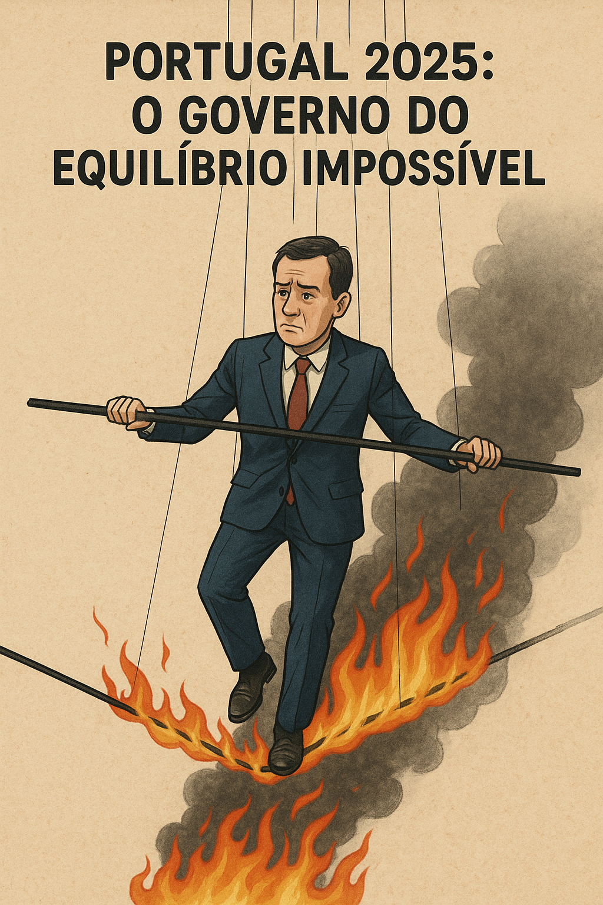

Publicado em 2025-05-21 11:36:22
Durante décadas, Portugal foi-se convencendo de que vivia em democracia plena. Votava-se, havia campanhas, debates, programas eleitorais — tudo parecia normal. Mas por trás desse verniz institucional, erguia-se um regime de partidocracia fechada, onde os partidos se tornaram não instrumentos de representação, mas donos do sistema político.
A política deixou de ser um espaço aberto à sociedade. Tornou-se um circuito fechado, onde os mesmos nomes rodam, os mesmos interesses se cruzam, e onde o cidadão comum — aquele que não tem cartão de militante — é meramente um espectador tolerado, chamado para votar e dispensado logo a seguir.
A mediocridade tomou o poder. Não por acaso, mas por seleção interna: os competentes foram afastados, os obedientes promovidos. A originalidade passou a ser subversão. O pensamento independente passou a ser ameaça. O sistema passou a premiar não quem pensa o país, mas quem serve a máquina.
E enquanto os partidos se autoalimentam, o país degrada-se. Políticos que desconhecem a realidade das escolas, dos hospitais ou dos bairros degradados fazem leis para mundos que só existem nos seus gabinetes. A cidadania foi esvaziada. A participação cívica tornou-se um ornamento constitucional, ignorado na prática.
A sociedade civil — rica em talento, ideias e visão estratégica — foi afastada da vida pública. Quando tenta intervir, é vista com desconfiança. Quando propõe, é ignorada. E assim se mantém o monopólio: a política é deles. O país é nosso. Mas mandam eles.
E o resultado está à vista: estagnação económica, crise social, desilusão política. E, mais perigosamente, um vazio de representação onde cresce o ressentimento, a descrença e, cada vez mais, o apelo às soluções simplistas dos extremos.
Se o sistema partidário não se abrir à sociedade, será ele próprio o engenheiro da sua ruína.
Porque um regime que se recusa a escutar os melhores da sociedade acabará por dar lugar aos que berram mais alto — e os extremismos hão de ocupar o espaço que os partidos recusaram à cidadania.
Não será o fim da democracia. Será o fim deles. E será apenas uma questão de sobrevivência.
Por Francisco Gonçalves in Fragmentos de Caos